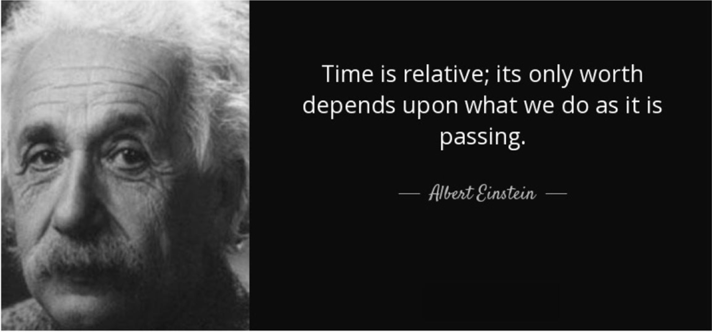

A Website That Transcribes An Interview
1. Extensive knowledge base 2. The most important value is Convenience, you can use it anytime, anywhere 3. Bring wealth to people, people make money through the internet 4. Give people room to create 5. The freedom of the Internet is very high
1. Play games and consult information
2. Even if the network does not have the relevant information, I can get a quick answer through the help of the forum or community
3. Go out with navigation, maps
4. Tell me the exact time
5. It brings a lot of convenience to life
6. Helps me save a lot of time, the web automatically retrieves what I need
1. Using my strengths to help others through the internet is how I find my value
Playing games or dealing with things on the internet with good friends, I can use my strengths to help the team work together
2. I play a driving force and role in the network as a user, a promoter
3. People have bridges of connection to each other. For every few people there is a common friend, and this is how the web can build huge communities
1. The essence of time is a number, the essence of the network is also a number, only the expression is different
2. We use timekeeping to calculate time, but also the concept of time is digitalized in a different way
3. When the Internet was not invented, it was as mysterious and as illusory a concept as time Still now still no one can decipher the time and accurately describe the time. And back then there was no network, if you and others say you want to put something in a virtual document and copy it, as well as no one can imagine. But I think in the future time will also be deciphered and expressed in the form of numbers. I think anything can be expressed in numbers. There are just some areas that have not been fully developed, so there are no exact numbers or formulas to express
1. The web has sped up time, which equates to saving human time and expanding the availability of time in an otherwise limited life. We can do more in a limited amount of time
2. Time has changed the rules of networking. Networks operate based on time. For example, during the day, when people are working, the usage and operation rate of the network becomes high; while at night, the usage rate of the network becomes low.
Coexistence.
1. Because the nature of the web and time are the same, they both originate from number
2. Nowadays, human beings cannot be separated from the Internet. Without the Internet everything will become troublesome. People can't live without time, and there is no way to live without knowing time.
Use the numbers 1 and 0 to represent the relationship between time and network coexistence
In the mathematical community, most huge formula problems end up with answers equal to 1 or 0, or converging to 0. 1 and 0 can represent networks and time. There is no absolute 0 and 1, just like the coexistence of time and network is not absolute, they are changing
Yes, it can, because the time itself can be accelerated in the network. If the network exceeds the speed of light, people can control time and change it through the network
The web is slowing down the passage of time, saving users time, and speeding up the world